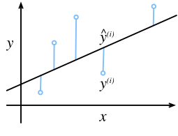
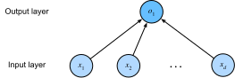
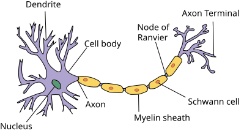

3.1. 线性回归¶
回归（regression）问题出现在我们想要预测某个数值的时候。 常见的例子包括预测价格（房屋、股票等）、 预测停留时长（医院中的病人）、 预测需求（零售销量）等等。 并非每个预测问题都是经典的回归问题。 后面我们还会介绍分类问题， 其目标是在一组类别中预测所属的类别。
作为一个贯穿全节的例子，假设我们希望 根据房屋的面积（单位：平方英尺）和房龄（单位：年） 来估计房屋的价格（单位：美元）。 为了开发一个预测房价的模型， 我们需要获取数据， 其中包括每套房屋的售价、面积和房龄。 用机器学习的术语来说， 该数据集称为训练数据集（training dataset）或训练集（training set）， 其中每一行（包含与一次交易对应的数据） 称为一个样例（example）， 或称为数据点（data point）、实例（instance）、样本（sample）。 我们试图预测的对象（价格） 称为标签（label）或目标值（target）。 预测所依据的变量（房龄和面积） 称为特征（feature）或协变量（covariate）。
%matplotlib inline
import math
import time
import numpy as np
import torch
from d2l import torch as d2l
%matplotlib inline
import math
import time
from mxnet import np
from d2l import mxnet as d2l
%matplotlib inline
import math
import time
from jax import numpy as jnp
from d2l import jax as d2l
%matplotlib inline
import math
import time
import numpy as np
import tensorflow as tf
from d2l import tensorflow as d2l
3.1.1. 基础¶
线性回归（linear regression）是解决 回归问题的标准工具中 最简单、也最流行的一种。 它的历史可以追溯到19世纪初 (Gauss, 1809, Legendre, 1805)， 源自几个简单的假设。 首先，我们假设特征\(\mathbf{x}\)与目标值\(y\)之间 的关系近似线性， 也就是说，条件均值\(E[Y \mid X=\mathbf{x}]\) 可以表示为特征\(\mathbf{x}\)的加权和。 这种设定允许目标值 由于观测噪声而偏离其期望值。 其次，我们可以施加这样的假设： 任何此类噪声都表现良好，服从高斯分布。 通常，我们用\(n\)表示 数据集中样例的数量。 我们用上标来枚举样本和目标值， 用下标来索引坐标。 更具体地说， \(\mathbf{x}^{(i)}\)表示第\(i^{\textrm{th}}\)个样本， \(x_j^{(i)}\)表示它的第\(j^{\textrm{th}}\)个坐标。
3.1.1.1. 模型¶
每个解决方案的核心都是一个模型， 它描述了如何把特征 变换为目标值的估计。 线性假设意味着， 目标值（价格）的期望值 可以表示为特征（面积和房龄）的加权和：
这里\(w_{\textrm{area}}\)和\(w_{\textrm{age}}\) 称为权重（weight），\(b\)称为偏置（bias） （或偏移量（offset）、截距（intercept））。 权重决定了每个特征对我们预测的影响。 偏置决定了所有特征都为零时估计值的大小。 尽管我们永远不会见到面积恰好为零的新建房屋， 但我们仍然需要偏置，因为它使我们能够 表示特征的所有线性函数 （而不是仅限于经过原点的直线）。 严格地说，(3.1.1) 是输入特征的仿射变换（affine transformation），它由通过加权和实现的特征线性变换（linear transformation）与通过加上偏置实现的平移（translation）组合而成。 给定一个数据集，我们的目标是选择 权重\(\mathbf{w}\)和偏置\(b\)， 使得平均而言，我们模型的预测 尽可能贴近数据中观测到的真实价格。
在通常只关注 少量特征数据集的学科中， 人们习惯像 (3.1.1) 那样 显式地写出模型的长形式。 而在机器学习中，我们通常处理 高维数据集， 此时采用紧凑的线性代数记号更为方便。 当输入由\(d\)个特征组成时， 我们可以为每个特征分配一个索引（在\(1\)到\(d\)之间）， 并把我们的预测\(\hat{y}\) （一般来说，“帽子”符号表示估计值）表示为
把所有特征收集到一个向量\(\mathbf{x} \in \mathbb{R}^d\)中， 把所有权重收集到一个向量\(\mathbf{w} \in \mathbb{R}^d\)中， 我们就可以通过\(\mathbf{w}\)与\(\mathbf{x}\)之间的点积 来紧凑地表示模型：
在 (3.1.3) 中，向量\(\mathbf{x}\) 对应于单个样例的特征。 我们常常会发现， 通过设计矩阵（design matrix）\(\mathbf{X} \in \mathbb{R}^{n \times d}\) 来指代整个包含\(n\)个样例的数据集的特征会很方便。 这里，\(\mathbf{X}\)的每一行对应一个样例， 每一列对应一个特征。 对于一组特征\(\mathbf{X}\)， 预测值\(\hat{\mathbf{y}} \in \mathbb{R}^n\) 可以通过矩阵-向量乘积来表示：
其中求和过程中应用了广播机制（ 2.1.4节 ）。 给定训练数据集的特征\(\mathbf{X}\) 和相应的（已知）标签\(\mathbf{y}\)， 线性回归的目标是找到 权重向量\(\mathbf{w}\)和偏置项\(b\)， 使得对于从与\(\mathbf{X}\)相同分布中采样得到的 新数据样例的特征， 新样例的标签能够（在期望意义下） 以最小的误差被预测。
即使我们认为，给定\(\mathbf{x}\)预测\(y\)的 最佳模型是线性的， 我们也不会指望在真实世界的数据集中 找到\(n\)个样例，使得 \(y^{(i)}\)对所有\(1 \leq i \leq n\)都恰好等于\(\mathbf{w}^\top \mathbf{x}^{(i)}+b\)。 例如，无论我们使用什么仪器来观测 特征\(\mathbf{X}\)和标签\(\mathbf{y}\)，都可能存在少量测量误差。 因此，即使我们确信 潜在的关系是线性的， 我们也会引入一个噪声项来解释这类误差。
在着手寻找最佳参数（parameter） （或模型参数（model parameter））\(\mathbf{w}\)和\(b\)之前， 我们还需要两样东西： （i）一种衡量给定模型质量的方法； （ii）一种更新模型以提高其质量的过程。
3.1.1.2. 损失函数¶
自然地，要让模型拟合数据， 就需要我们对某种拟合程度（fitness）的度量 （等价地说，是不拟合程度（unfitness）的度量）达成一致。 损失函数（loss function）衡量 目标值的真实值与预测值之间的距离。 损失通常是一个非负数， 其值越小越好， 完美预测的损失为0。 对于回归问题，最常见的损失函数是平方误差。 当第\(i\)个样例的预测值为\(\hat{y}^{(i)}\)、 对应的真实标签为\(y^{(i)}\)时， 平方误差（squared error）由下式给出：
常数\(\frac{1}{2}\)并不会带来实质差别， 但在记号上很方便， 因为它在我们对损失求导时恰好被消去。 由于训练数据集是给定的， 因而不受我们控制， 所以经验误差只是模型参数的函数。 在 图3.1.1 中，我们可视化了 一个一维输入问题中线性回归模型的拟合效果。

图3.1.1 对一维数据拟合线性回归模型。¶
注意，估计值\(\hat{y}^{(i)}\)与目标值\(y^{(i)}\)之间 较大的差异会由于其二次形式 而对损失产生更大的贡献 （这种二次性是一把双刃剑：它一方面鼓励模型避免大的误差， 另一方面也可能导致模型对异常数据过于敏感）。 要衡量模型在整个包含\(n\)个样例的数据集上的质量， 我们只需对训练集上的损失求平均（等价地说，求和）：
在训练模型时，我们寻找参数（\(\mathbf{w}^*, b^*\)）， 使所有训练样例上的总损失最小：
3.1.1.3. 解析解¶
与我们将要介绍的大多数模型不同， 线性回归呈现给我们的 优化问题简单得令人惊讶。 特别地，我们可以 用如下简单公式解析地求出最优参数 （这里的评估依据是训练数据）。 首先，我们可以通过在设计矩阵后追加一列全1， 把偏置\(b\)并入参数\(\mathbf{w}\)。 于是我们的预测问题就是最小化\(\|\mathbf{y} - \mathbf{X}\mathbf{w}\|^2\)。 只要设计矩阵\(\mathbf{X}\)满秩 （没有特征与其他特征线性相关）， 那么损失曲面上就只有一个临界点， 它对应于损失在整个定义域上的最小值。 对损失关于\(\mathbf{w}\)求导 并令其等于零，得到：
求解\(\mathbf{w}\)就得到了 该优化问题的最优解。 注意，这个解
只有在矩阵\(\mathbf X^\top \mathbf X\)可逆时， 也就是设计矩阵的各列 线性独立时，才是唯一的 (Golub and Van Loan, 1996)。
虽然像线性回归这样的简单问题 可能容许解析解， 但你不应习惯于这种好运。 尽管解析解能够带来漂亮的数学分析， 但对解析解的要求过于苛刻， 以至于会排除深度学习中几乎所有激动人心的方面。
3.1.1.4. 小批量随机梯度下降¶
幸运的是，即使在无法解析求解模型的情况下， 我们通常仍然能在实践中有效地训练模型。 此外，对于许多任务而言， 那些难以优化的模型 结果要好得多， 以至于弄清如何训练它们 最终是完全值得的。
优化几乎每一个深度学习模型的关键技术， 也是我们在全书中会反复用到的技术， 就是通过沿着 逐步降低损失函数的方向更新参数， 来迭代地减小误差。 这种算法称为梯度下降（gradient descent）。
梯度下降最朴素的应用方式， 是计算损失函数的导数， 而该损失是对数据集中 每个样例计算出的损失的平均。 在实践中，这可能极其缓慢： 我们必须遍历整个数据集才能进行一次更新， 即使更新步可能非常强大 (Liu and Nocedal, 1989)。 更糟的是，如果训练数据中存在大量冗余， 完整更新的收益也是有限的。
另一个极端是每次只考虑一个样例， 并基于一次观测采取更新步。 由此得到的算法随机梯度下降 （stochastic gradient descent，SGD） 可以是一种有效的策略 (Bottou, 2010)， 即使对于大型数据集也是如此。 不幸的是，SGD在计算和统计两方面都有缺点。 一个问题来自这样的事实： 处理器在做乘加运算时， 比把数据从主内存移动到处理器缓存时快得多。 执行一次矩阵-向量乘法， 比执行相应数量的向量-向量运算 至多可高效一个数量级。 这意味着，与处理一整个批次相比， 一次处理一个样本可能耗时多得多。 第二个问题是，有些层， 例如批量规范化（将在 8.5节 中描述）， 只有在我们一次能访问多个观测时 才能很好地工作。
这两个问题的解决办法是采取一种折中的策略： 既不一次取整个批次，也不一次只取单个样本， 而是一次取一个小批量（minibatch）观测 (Li et al., 2014)。 所述小批量的具体大小 取决于许多因素， 例如内存大小、加速器数量、 层的选择以及数据集总大小。 尽管如此，32到256之间的一个数， 最好是\(2\)的某个较大次幂的倍数， 是一个不错的起点。 这就引出了小批量随机梯度下降（minibatch stochastic gradient descent）。
在其最基本的形式中，在第\(t\)次迭代时， 我们首先随机抽取一个由固定数量\(|\mathcal{B}|\)个训练样例 组成的小批量\(\mathcal{B}_t\)。 然后我们计算小批量上的平均损失 关于模型参数的导数（梯度）。 最后，我们把梯度乘以一个预先确定的小正数\(\eta\)， 称为学习率（learning rate）， 并从当前参数值中减去所得项。 我们可以把更新表示为：
总之，小批量SGD的过程如下： （i）初始化模型参数的值，通常随机初始化； （ii）迭代地从数据中抽取随机小批量， 沿着负梯度的方向更新参数。 对于二次损失和仿射变换， 这具有闭式展开：
由于我们选取的是一个小批量\(\mathcal{B}\)， 需要用其大小\(|\mathcal{B}|\)进行规范化。 通常，小批量大小和学习率是由用户定义的。 这类在训练循环中不更新的可调参数 称为超参数（hyperparameter）。 它们可以通过多种技术自动调优， 例如贝叶斯优化 (Frazier, 2018)。 最终，解的质量通常在一个单独的 验证数据集（validation dataset）（或验证集（validation set））上评估。
在预先确定的若干次迭代之后 （或直到满足其他某种停止准则）， 我们记录估计出的模型参数， 记为\(\hat{\mathbf{w}}, \hat{b}\)。 注意，即使我们的函数确实是线性且无噪声的， 这些参数也不会是损失的精确最小化者， 甚至不是确定性的。 尽管算法会缓慢地收敛到最小化者， 但它通常不会在有限步数内精确地找到它们。 此外，用于更新参数的小批量\(\mathcal{B}\) 是随机选取的。 这破坏了确定性。
线性回归恰好是一个 具有全局最小值的学习问题 （只要\(\mathbf{X}\)满秩， 等价地说，只要\(\mathbf{X}^\top \mathbf{X}\)可逆）。 然而，深度网络的损失曲面包含许多鞍点和最小值。 幸运的是，我们通常并不关心 找到一组精确的参数， 而只关心找到任何一组 能带来准确预测（从而低损失）的参数。 在实践中，深度学习从业者 很少难以找到使损失在训练集上最小的参数 (Frankle and Carbin, 2018, Izmailov et al., 2018)。 更艰巨的任务是找到 能在以前未见过的数据上带来准确预测的参数， 这一挑战称为泛化（generalization）。 我们在全书中会反复回到这些主题。
3.1.1.5. 预测¶
给定模型\(\hat{\mathbf{w}}^\top \mathbf{x} + \hat{b}\)， 我们现在就可以对新样例做预测了， 例如，根据一套以前未见过的房屋的 面积\(x_1\)和房龄\(x_2\)来预测其售价。 深度学习从业者习惯于把预测阶段称为推理（inference）， 但这有点用词不当——推理泛指 基于证据得出的任何结论， 既包括参数的值， 也包括对未见实例的可能标签。 要说的话，在统计学文献中， 推理更多指参数推断， 这种术语的重载在深度学习从业者 与统计学家交流时会造成不必要的混淆。 在下文中，我们将尽可能坚持使用预测。
3.1.2. 向量化加速¶
在训练模型时，我们通常希望 同时处理整个小批量的样例。 高效地做到这一点，要求我们 把计算向量化，并利用 快速的线性代数库， 而不是在Python中编写开销很大的for循环。
为了看明白为什么这如此重要， 让我们考虑两种向量相加的方法。
首先，我们实例化两个 包含全1的10,000维向量。
在第一种方法中，我们用Python的for循环遍历这些向量。
在第二种方法中，我们只依赖一次对+的调用。
n = 10000
a = torch.ones(n)
b = torch.ones(n)
n = 10000
a = np.ones(n)
b = np.ones(n)
n = 10000
a = jnp.ones(n)
b = jnp.ones(n)
n = 10000
a = tf.ones(n)
b = tf.ones(n)
现在我们可以对这些工作负载进行基准测试。 首先，我们使用for循环， 一次一个坐标地把它们相加。
c = torch.zeros(n)
t = time.time()
for i in range(n):
c[i] = a[i] + b[i]
f'{time.time() - t:.5f} sec'
c = np.zeros(n)
t = time.time()
for i in range(n):
c[i] = a[i] + b[i]
f'{time.time() - t:.5f} sec'
# JAX arrays are immutable, meaning that once created their contents
# cannot be changed. For updating individual elements, JAX provides
# an indexed update syntax that returns an updated copy
c = jnp.zeros(n)
t = time.time()
for i in range(n):
c = c.at[i].set(a[i] + b[i])
f'{time.time() - t:.5f} sec'
c = tf.Variable(tf.zeros(n))
t = time.time()
for i in range(n):
c[i].assign(a[i] + b[i])
f'{time.time() - t:.5f} sec'
或者，我们依靠重载的+运算符来计算按元素的和。
t = time.time()
d = a + b
f'{time.time() - t:.5f} sec'
第二种方法比第一种方法快得多。 向量化代码往往能带来数量级的加速。 此外，我们把更多的数学运算交给库来完成， 这样我们自己就不必写那么多计算， 从而减少了出错的可能，并提高了代码的可移植性。
3.1.3. 正态分布与平方损失¶
到目前为止，我们对平方损失目标 给出了一个相当实用的动机： 当潜在的模式确实是线性时， 最优参数给出条件期望\(E[Y\mid X]\)， 而且该损失对离群点施加很大的惩罚。 我们还可以通过对噪声分布 作出概率假设， 为平方损失目标提供更正式的动机。
线性回归发明于19世纪之交。 长期以来，人们一直在争论 究竟是高斯（Gauss）还是勒让德（Legendre） 最先想到这个想法， 但发现正态分布 （也称为高斯分布（Gaussian））的正是高斯。 事实证明，正态分布 与带平方损失的线性回归之间 的联系，比共同的渊源更为深刻。
首先，回想一下，均值为\(\mu\)、 方差为\(\sigma^2\)（标准差为\(\sigma\)） 的正态分布表示为
下面，我们定义一个计算正态分布的函数。
def normal(x, mu, sigma):
p = 1 / math.sqrt(2 * math.pi * sigma**2)
return p * np.exp(-0.5 * (x - mu)**2 / sigma**2)
def normal(x, mu, sigma):
p = 1 / math.sqrt(2 * math.pi * sigma**2)
return p * np.exp(-0.5 * (x - mu)**2 / sigma**2)
def normal(x, mu, sigma):
p = 1 / math.sqrt(2 * math.pi * sigma**2)
return p * jnp.exp(-0.5 * (x - mu)**2 / sigma**2)
def normal(x, mu, sigma):
p = 1 / math.sqrt(2 * math.pi * sigma**2)
return p * np.exp(-0.5 * (x - mu)**2 / sigma**2)
现在我们可以可视化这些正态分布。
# Use NumPy again for visualization
x = np.arange(-7, 7, 0.01)
# Mean and standard deviation pairs
params = [(0, 1), (0, 2), (3, 1)]
d2l.plot(x, [normal(x, mu, sigma) for mu, sigma in params], xlabel='x',
ylabel='p(x)', figsize=(4.5, 2.5),
legend=[f'mean {mu}, std {sigma}' for mu, sigma in params])
# Use NumPy again for visualization
x = np.arange(-7, 7, 0.01)
# Mean and standard deviation pairs
params = [(0, 1), (0, 2), (3, 1)]
d2l.plot(x.asnumpy(), [normal(x, mu, sigma).asnumpy() for mu, sigma in params], xlabel='x',
ylabel='p(x)', figsize=(4.5, 2.5),
legend=[f'mean {mu}, std {sigma}' for mu, sigma in params])
# Use JAX NumPy for visualization
x = jnp.arange(-7, 7, 0.01)
# Mean and standard deviation pairs
params = [(0, 1), (0, 2), (3, 1)]
d2l.plot(x, [normal(x, mu, sigma) for mu, sigma in params], xlabel='x',
ylabel='p(x)', figsize=(4.5, 2.5),
legend=[f'mean {mu}, std {sigma}' for mu, sigma in params])
# Use NumPy again for visualization
x = np.arange(-7, 7, 0.01)
# Mean and standard deviation pairs
params = [(0, 1), (0, 2), (3, 1)]
d2l.plot(x, [normal(x, mu, sigma) for mu, sigma in params], xlabel='x',
ylabel='p(x)', figsize=(4.5, 2.5),
legend=[f'mean {mu}, std {sigma}' for mu, sigma in params])
注意，改变均值对应于 沿\(x\)轴的平移， 而增大方差会使分布变得更宽， 从而降低其峰值。
为带平方损失的线性回归提供动机的一种方式， 是假设观测来自带噪声的测量， 其中噪声\(\epsilon\)服从正态分布 \(\mathcal{N}(0, \sigma^2)\)：
因此，我们现在可以写出在给定\(\mathbf{x}\)的情况下 看到某个特定\(y\)的似然（likelihood）：
这样，似然就可以因子分解。 根据最大似然原理， 参数\(\mathbf{w}\)和\(b\)的最佳取值， 是使整个数据集的似然最大的那些取值：
该等式成立是因为所有对\((\mathbf{x}^{(i)}, y^{(i)})\) 都是彼此独立地抽取的。 按照最大似然原理选出的估计量 称为最大似然估计量（maximum likelihood estimator）。 最大化许多指数函数的乘积 可能看起来很困难， 但只要改为最大化似然的对数， 我们就能在不改变目标的情况下大大简化问题。 由于历史原因，优化问题更常 被表述为最小化而不是最大化。 因此，在不做任何改变的情况下， 我们可以最小化 负对数似然（negative log-likelihood）， 它可以表示如下：
如果我们假设\(\sigma\)是固定的， 就可以忽略第一项， 因为它不依赖于\(\mathbf{w}\)或\(b\)。 第二项与前面介绍的 平方误差损失完全相同， 只差一个相乘的常数\(\frac{1}{\sigma^2}\)。 幸运的是，解也不依赖于\(\sigma\)。 由此可知，最小化均方误差 等价于在加性高斯噪声假设下 对线性模型进行最大似然估计。
3.1.4. 线性回归作为神经网络¶
虽然线性模型不够丰富， 无法表示我们将在本书中介绍的 许多复杂网络， 但（人工）神经网络足够丰富， 能够把线性模型涵盖为这样的网络： 其中每个特征都由一个输入神经元表示， 而这些神经元都直接连接到输出。
图3.1.2 把线性回归 描绘成一个神经网络。 该图强调了连接模式， 例如每个输入如何连接到输出， 但没有给出权重或偏置所取的具体值。

图3.1.2 线性回归是一个单层神经网络。¶
输入是\(x_1, \ldots, x_d\)。 我们把\(d\)称为输入层的输入数 或特征维数。 网络的输出是\(o_1\)。 由于我们只是想预测 一个数值， 所以只有一个输出神经元。 注意，输入值都是给定的。 只有一个神经元是计算出来的。 总之，我们可以把线性回归 看作一个单层全连接神经网络。 在后面的章节中，我们将遇到 层数多得多的网络。
3.1.4.1. 生物学¶
由于线性回归的提出早于计算神经科学， 用神经网络来描述线性回归 可能显得有些不合时宜。 尽管如此，当控制论专家和神经生理学家 Warren McCulloch 和 Walter Pitts 开始开发人工神经元模型时， 线性回归仍是一个自然的起点。 请看 图3.1.3 中 这个卡通化的生物神经元图， 它由树突（dendrites，输入端）、 细胞核（nucleus，CPU）、轴突（axon，输出线） 和轴突末梢（axon terminals，输出端）组成， 并通过突触（synapses）与其他神经元建立连接。

图3.1.3 真实的神经元（来源：美国国家癌症研究所监测、流行病学和最终结果（SEER）项目的《解剖学与生理学》）。¶
来自其他神经元（或环境传感器）的信息\(x_i\) 在树突中被接收。 特别地，该信息会按突触权重\(w_i\)进行加权， 从而决定输入的影响， 例如通过乘积\(x_i w_i\)产生激活或抑制。 来自多个来源的加权输入 在细胞核中被聚合为一个加权和\(y = \sum_i x_i w_i + b\)， 并可能经过某个函数\(\sigma(y)\)的非线性后处理。 随后，这些信息通过轴突 传送到轴突末梢， 在那里到达其目的地 （例如肌肉这样的执行器）， 或者通过其树突被送入另一个神经元。
当然，这样一个高层次的想法—— 只要具备正确的连接方式和学习算法， 许多这样的单元就可以组合起来， 产生比任何单个神经元 所能表达的远为有趣和复杂的行为—— 源于我们对真实生物神经系统的研究。 与此同时，如今深度学习的大多数研究 从更广泛的来源中汲取灵感。 我们引用 Russell and Norvig (2016) ， 他们指出：尽管飞机可能是 受到鸟类的启发， 但几个世纪以来，鸟类学 并不是航空学创新的主要推动力。 同样，如今深度学习中的灵感， 有同等或更大程度 来自数学、语言学、心理学、 统计学、计算机科学以及许多其他领域。
3.1.5. 小结¶
在本节中，我们介绍了 传统的线性回归， 其中线性函数的参数 被选择为使训练集上的平方损失最小。 我们还通过一些实际考量， 以及把线性回归解释为 在线性假设和高斯噪声假设下的 最大似然估计， 为这一目标选择提供了动机。 在讨论了计算方面的考量 以及与统计学的联系之后， 我们展示了如何把这类线性模型 表示成简单的神经网络，其中输入 直接连接到输出。 虽然我们很快就会完全超越线性模型， 但它们足以引出我们所有模型 都需要的大多数组成部分： 参数化形式、可微的目标函数、 通过小批量随机梯度下降进行的优化， 以及最终在以前未见过的数据上的评估。
3.1.6. 练习¶
假设我们有一些数据\(x_1, \ldots, x_n \in \mathbb{R}\)。我们的目标是找到一个常数\(b\)，使\(\sum_i (x_i - b)^2\)最小。
求\(b\)最优值的解析解。
这个问题及其解与正态分布有什么关系？
如果我们把损失从\(\sum_i (x_i - b)^2\)改为\(\sum_i |x_i-b|\)，会怎样？你能求出\(b\)的最优解吗？
证明：可由\(\mathbf{x}^\top \mathbf{w} + b\)表示的仿射函数，等价于\((\mathbf{x}, 1)\)上的线性函数。
假设你想求\(\mathbf{x}\)的二次函数，即\(f(\mathbf{x}) = b + \sum_i w_i x_i + \sum_{j \leq i} w_{ij} x_{i} x_{j}\)。你会如何在深度网络中表述它？
回想一下，线性回归问题可解的条件之一是设计矩阵\(\mathbf{X}^\top \mathbf{X}\)满秩。
如果不是这样，会发生什么？
你会如何修复它？如果你给\(\mathbf{X}\)的所有元素加上少量逐坐标独立的高斯噪声，会发生什么？
在这种情况下，设计矩阵\(\mathbf{X}^\top \mathbf{X}\)的期望值是多少？
当\(\mathbf{X}^\top \mathbf{X}\)不满秩时，随机梯度下降会发生什么？
假设支配加性噪声\(\epsilon\)的噪声模型是指数分布。也就是说，\(p(\epsilon) = \frac{1}{2} \exp(-|\epsilon|)\)。
写出该模型下数据的负对数似然\(-\log P(\mathbf y \mid \mathbf X)\)。
你能求出闭式解吗？
请提出一种用小批量随机梯度下降求解该问题的算法。可能出什么问题（提示：当我们持续更新参数时，在驻点附近会发生什么）？你能修复它吗？
假设我们想通过组合两个线性层来设计一个两层的神经网络。也就是说，第一层的输出成为第二层的输入。为什么这种朴素的组合方式行不通？
如果你想用回归来对房屋或股票进行现实的价格估计，会遇到什么问题？
证明加性高斯噪声假设并不合适。提示：价格可以为负吗？波动呢？
为什么对价格的对数做回归会好得多，即\(y = \log \textrm{price}\)？
在处理仙股（即价格非常低的股票）时，你需要担心什么？提示：你能以所有可能的价格交易吗？为什么这对低价股是更严重的问题？更多信息请参阅著名的期权定价Black–Scholes模型 (Black and Scholes, 1973)。
假设我们想用回归来估计一家杂货店售出的苹果的数量。
高斯加性噪声模型有什么问题？提示：你卖的是苹果，不是石油。
泊松分布刻画了计数的分布。它由\(p(k \mid \lambda) = \lambda^k e^{-\lambda}/k!\)给出。这里\(\lambda\)是速率函数，\(k\)是你观测到的事件数。证明\(\lambda\)是计数\(k\)的期望值。
设计与泊松分布相关的损失函数。
设计一个用于估计\(\log \lambda\)的损失函数。